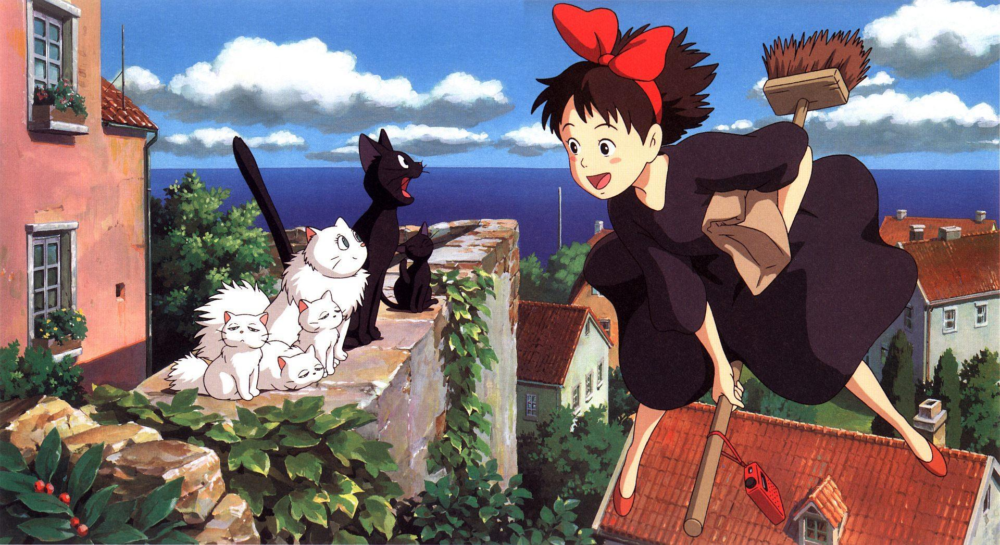

1. El viaje de Chihiro (2001)
Una familia toma la salida equivocada camino a su nuevo hogar y una niña termina inmiscuida en una oscura aventura con una colección de espíritus, brujas, monstruos y más criaturas fantásticas. Es la película más extensa y fascinante de Miyazaki.

2. La princesa Mononoke (1997)
Una fantasía hermosa, una exhortación a vivir en balance con la naturaleza y una aventura cautivadora que hace recordar las clásicas películas de samurái de Akira Kurosawa: hay algo gustoso por donde lo veas. Quizá Mononoke, la película que le dio notoriedad a Studio Ghibli en el continente americano, no te transporta tanto como Chihiro, pero por muy poca diferencia.
3. Mi vecino Totoro (1998)
Las hermanas Satsuki y Mei se mudan a una nueva casa en el campo mientras su madre está convaleciente en un hospital cercano y vencen a sus miedos con ayuda de nuevos amigos –posiblemente imaginarios–, como un gato sonriente que también es autobús y el gigante y peludo Totoro. Este filme de Miyazaki, que podría tomarse como simple y aniñado, en realidad es un portal conmovedor a las alegrías y terrores de la niñez.

4. El castillo ambulante o El increíble castillo vagabundo (2004)
Esta fábula no es la favorita de algunos fanáticos de Miyazaki, con algunos giros de trama excéntricos y conexiones que son más sobre emociones e imágenes que progresión de la trama… pero qué imágenes. La historia de amor poco convencional junta a Howl, un mago mitad hombre, mitad ave que viaja a bordo del castillo del título, y a Sophie, una sombrerera joven que fue convertida en mujer anciana por una bruja.

5. Niki la aprendiz de bruja o Kiki entregas a domicilio (1989)
Una historia sobre el paso hacia la adultez de una joven bruja traviesa y algo torpe que deja su hogar a los 13 años para encontrar un trabajo y un nuevo pueblo, como deben hacerlo las brujas. La trama de heroísmo y descubrimiento de quién eres es algo convencional pero encantadora; se siente como algo de Disney a momentos y algo como de la nueva ola de Truffaut en otros.